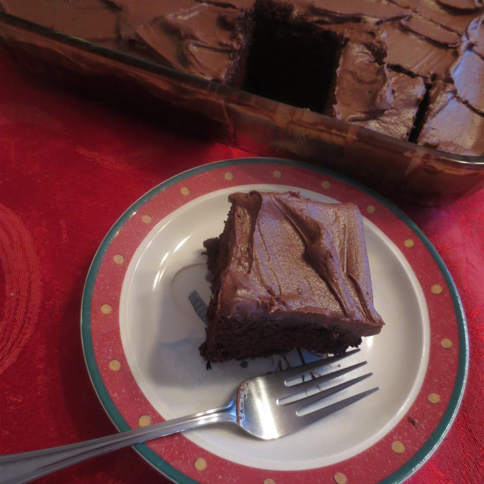

Vegan Devil's Food Cake

Description
Everyone in my family, vegan and non-vegan, loves this cake!
Frost with vegan buttercream or icing if desired.
Ingredients
- 6 ounces unsweetened chocolate, chopped
- 3 cups cake flour
- 2 teaspoons baking soda
- ½ teaspoon salt
- 2 cups white sugar
- 1 ¾ cups water
- ⅔ cup vegetable oil
- 2 teaspoons vanilla extract
- 1 teaspoon balsamic vinegar
Steps
- Melt unsweetened chocolate in top of a double boiler
over simmering water, stirring frequently and scraping
down the sides with a rubber spatula to avoid scorching.
Set aside to cool slightly, about 5 minutes.
- Preheat oven to 350 degrees F (175 degrees C).
Line two 9-inch cake pans with waxed paper.
- Sift cake flour, baking soda, and salt together in a large bowl.
- Whisk sugar, water, vegetable oil, vanilla extract,
and balsamic vinegar in a large bowl until well-combined.
Stir in half of the sifted flour mixture. Fold in melted chocolate.
Stir in remaining sifted flour mixture. Beat with an electric mixer
on medium speed until batter is smooth, about 2 minutes.
Divide batter between cake pans.
- Bake in the preheated oven until toothpicks inserted in the centers
come out clean, about 45 minutes. Cool in the pans, 5 minutes.
Invert cakes onto wire rack and let cool completely before frosting,
about 1 hour.
back